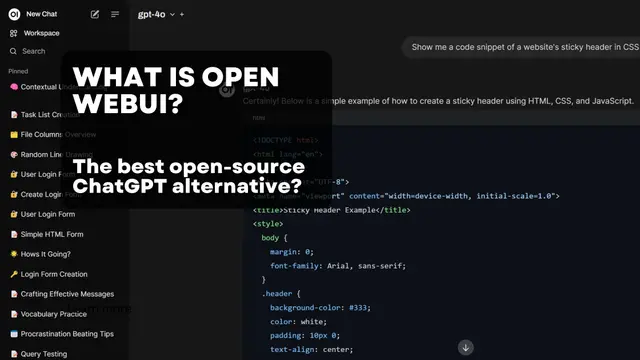

"Welcome to Sovereign Seed"
"My Path. My Vision. Our Future.”
believe that the sovereignty of our data, our systems, and our currency is the key to a stable and coherent future.
It is with this conviction that I design and build my digital tools — to empower independence, protect privacy, and shape a future we can truly own together.
About My Projects
*Note: The colors and design of this section may differ from the rest of the site, as they reflect the official branding of the XCannes project. Thank you for your understanding.

“XCannes: Secure. Fast. Sovereign.”
XCannes: A Decentralized Exchange for Real‑World Currencies.
XCannes is more than a website — it’s a Decentralized Exchange (DEX) built on the XRPL, live and ready to use.
Its mission is simple:
allow anyone to buy, sell, and exchange world currencies instantly, use stablecoins pegged to national currencies to keep value stable and reliable, provide a fast, secure, and transparent alternative to traditional money exchanges.
Think of it like an online global currency exchange, but without borders, queues, or excessive fees — everything runs live on the XRPL blockchain.
In the near future, XCannes will also be powered by XCS, its own native token designed to support and expand the ecosystem.
Discover www.xcannes.com🪙 Cannes, destination cryptofriendly !
— Cannes, France (@Cannes_France) August 1, 2025
Plus de 80 commerçants cannois (plages, restaurants, hôtels, boutiques…) acceptent les paiements en cryptomonnaie.
Une initiative portée par la @villecannes et le @palaisdesfestivals, dans le cadre d’une stratégie Web3 ambitieuse.
➡️… pic.twitter.com/QjOutALxMP
What is XCS?
XCS is a cryptocurrency I created as the native token of the XCannes DEX and ecosystem. Its first utility is simple yet powerful:
To access the XCannes platform, users must hold at least 2 XCS in their XUMM wallet.
Our backend verifies the balance (without ever accessing your funds) and grants access once the requirement is met.
Once connected via XUMM, your account is authenticated and you can buy, sell, or exchange world currencies through stablecoins pegged to national values.
This system ensures that XCS already has a real, working use case today.
that’s just the beginning.
XCS will be integrated into future tools I develop, and eventually, it will be designed for real‑world adoption by merchants, businesses, and communities.
In the long run, the ambition is clear:
make XCS the digital currency of Cannes, a city now engaged in the global race for tech, blockchain, and AI.
XCS-- XCannes Token Information
| Total Supply | 2,006,400 XCS |
|---|---|
| Issuer Address | rBxQY3dc4mJtcDA5UgmLvtKsdc7vmCGgxx |
| Currency Code | XCS |
Become an Early Adopter
You can acquire the XCS token directly from any platform compatible with the XRP Ledger — such as XUMM (Xaman), Sologenic, XRP Toolkit, Bithomp, XRPL Services, and more.
To add and purchase XCS, simply enter the following
- Issuer: rBxQY3dc4mJtcDA5UgmLvtKsdc7vmCGgxx
- Currency Code: XCS
As soon as sell offers are available on the market, you’ll be able to purchase the amount you want, quickly and securely.
Cannes: Crypto & AI News:
"Building a Sovereign AI That Knows Me"
For me, AI is more than a tool — it’s a partner I’m building to truly know me, my family, and my projects. I want an AI that grows with me, respects my privacy, and reflects my values.
With Hugging Face, "Attention Is All You Need" . Explore and choose from thousands of models — all online, open source, and ready to power your local AI projects.
My Personnal Setup
"Hardware Setup"
NVIDIA RTX 3070
Equipped with 8 GB of GDDR6 VRAM, the RTX 3070 delivers exceptional performance for local AI projects.
Learn moreCorsair Vengeance RGB — 32 GB (4×8 GB DDR4)
Fast, stable, and visually stunning — ideal for AI workloads.
Learn moreAMD Ryzen™ 5 5600X
A 6‑core, 12‑thread desktop processor built on AMD’s Zen 3 architecture. With a base clock of 3.7 GHz and a max boost up to 4.6 GHz,
Learn moreSamsung SSD 970 EVO 500GB
High‑speed M.2 storage for fast boot, smooth workflows, and reliable AI performance.
Learn moreWestern Digital — 2 TB SATA Drives (Multiple)
Several terabytes dedicated to archiving my growing personal AI model library.
Learn moreThis setup is already strong enough to run models up to 7–8B parameters, and even test Mixture of Experts (MoE) architectures.
Looking Ahead
I’m planning to upgrade soon with a Geforce RTX 5090, but NVIDIA has introduced a Verified Priority Access program for the GeForce RTX 5090, limiting purchases to one card per household and available by invitation only. This shows how critical and in‑demand high‑end GPUs have become.
I’m also considering moving to Ryzen 64-bit for even more power.
"Base System Setup"
Linux (Ubuntu/Debian)
Operating System (OS) stable, open‑source, lightweight, and ideal for developers.
Learn more
Visual Studio Code (VS Code)
A lightweight, open‑source code editor with powerful extensions — perfect for coding, debugging, and managing AI projects.
Learn more
NVIDIA cuDNN
NVIDIA’s library that accelerates deep learning on GPUs, delivering optimized performance for AI frameworks.
Learn more
CUDA — NVIDIA’s Parallel Computing Platform
NVIDIA’s toolkit that enables GPUs to run complex computations, not just graphics — turning your card into an AI engine.
Learn moreTensorFlow, Created by Google
TensorFlow is a highly scalable framework widely used in enterprise AI. It integrates closely with Keras and supports large-scale deep learning projects.
Learn more
PyTorch Developed by Facebook AI Research
It powers most modern open-source AI models, including those on Hugging Face and Ollama.
Learn moreYou can install both Pytorch and TensorFlow without any conflict — many developers use them side by side. I currently use both in my setup. Just make sure they are correctly linked to your NVIDIA drivers, CUDA, and cuDNN so your GPU can handle AI workloads efficiently.
⚙️ Essential Base Installations
Development & Compatibility
Python 3 + pip
Almost all open‑source AI frameworks rely on it.
Git
Essential for cloning repositories from Hugging Face or GitHub.
Build Essentials
(gcc, g++, make, etc. — required to compile certain modules)
"Software Stack"
Docker Compose: The Foundation of Your Local AI Setup
For any local AI project, the very first step is to install Docker Compose.
It’s the backbone of the infrastructure, acting like a server that runs multiple services together — databases, vector stores, APIs, and AI models — all seamlessly connected and working in harmony.
With Docker, you can create a complete AI setup from a single configuration file. An image is more than just software it’s a ready‑to‑run package that brings together everything needed, connecting services directly inside containers.
You can build your own images using a Dockerfile , but in most cases, Docker Hub already provides thousands of ready‑to‑use images for almost every need.
While Docker Compose may seem challenging at first, it quickly becomes the key to a smooth, efficient and modular AI setup.
👉 Start here:
Install Docker Compose
For a deeper dive, I highly recommend this 20‑episode Docker training, which helped me truly understand and feel at ease with Docker.
Nicelydev:20‑episode Docker training
A truly pedagogical course that makes Docker Compose accessible to everyone.
Learn moreN8n for workflow automation

A No‑Code Platform for AI Automation
n8n is an open‑source automation tool designed for people who want to build complex workflows without needing to write code. With its visual interface, you simply connect nodes together, each representing an action or a service to create powerful automation chains in minutes.
Visual Workflows, Zero Coding Instead of typing hundreds of lines of code, you just drag and drop nodes.

Want to connect an AI model with a vector database? → Just link the nodes.
Need speech‑to‑text, text‑to‑speech, or image generation? → There are nodes for that too.
Even advanced features like RAG (Retrieval‑Augmented Generation) and PostgreSQL integration are just a few clicks away.
It’s so intuitive that you’ll quickly find yourself creating workflows that look as good as they are useful.
Connect Everything With n8n, you can connect almost anything: Local AI models (Ollama, Hugging Face, etc.) Vector databases like Qdrant ChatGPT APIs and other cloud AI services STT/TTS systems for speech interaction PostgreSQL and other databases for structured data Even image processing tools If it has an API, you can plug it into n8n.
tutorials **n8n** on the official YouTube channel.
Discover how to create workflows, connect apps, and automate your tasks — no coding required!
Learn moreWhy You’ll Love It No‑Code → Perfect for beginners who don’t know how to program. Extremely Visual → Easy to understand, easy to design. Endlessly Flexible → Works with AI, databases, APIs, and more. Addictive → Once you start building workflows, you won’t want to stop.
👉 Try n8n today — you’ll be hooked in no time.
PostgreSQL for structured data

PostgreSQL is a powerful, open‑source relational database system.
It stores and organizes structured data — like user information, logs, or application records — in a secure and reliable way.
Unlike vector databases such as Qdrant, which are designed for embeddings and semantic search, PostgreSQL focuses on structured data
This makes it ideal for:
Saving and querying user profiles Storing application settings and logs Managing large volumes of structured information that your AI may need
👉 For more details : PostgreSQL official website .
In short, Qdrant remembers meaning, while PostgreSQL remembers structure — and together, they form a complete memory system for your AI

Qdrant: The Vector Database for AI Memory

With Qdrant, you can create a private knowledge base that your AI truly understands. Here’s how it works, step by step:
Chunking your documents
You send text or documents into a chunking system.
The content is split into smaller, meaningful pieces (chunks), such as sentences or short paragraphs.
Creating embeddings
Each chunk is converted into an embedding (a vector) using a model like Ollama’s TextEmbed.
These embeddings capture the semantic meaning of the text, not just the words.
👉 For example: “car” and “vehicle” may look different, but in vector space they appear close, because they mean the same thing.
Storing in Qdrant
The embeddings are stored in Qdrant, creating your own semantic library of knowledge.
You can also add metadata (topics, tags, sources) for more targeted search later.
Asking questions
When you ask your AI a question, the question itself is transformed into an embedding.
Qdrant compares this query vector with the stored vectors and finds the closest matches.
Retrieving context
The most relevant chunks are returned to your AI.
Qdrant YouTube Tutorial.
Load Data to Qdrant: How to Chunk and Vectorize Text in 5 Minutes.
Learn moreCombined with structured context from PostgreSQL (user data, metadata, or logs), this gives your model a complete picture.
In short: Qdrant gives your AI semantic memory, while PostgreSQL adds structured context. Together, they make your AI smarter and more personalized.
Ollama: Powering Local AI with Ready‑to‑Use Models

Ollama is a platform that makes it simple to download and run open‑source AI models on your local machine.
You’ll find almost everything you need:
Embeddings for semantic search and knowledge bases
TTS (Text‑to‑Speech) to give your AI a voice
STT (Speech‑to‑Text) to let your AI understand you
A wide range of state‑of‑the‑art models, ready to install and use
They may not always be the absolute best in the world, but they’re among the most reliable and accessible open‑source models you can get today — and Ollama makes installation quick and easy.
Ollama YouTube Tutorial.
Learn how to install Ollama on Linux and run it locally on your own machine.
Learn moreOpenWebUI: The Leading Open‑Source Interface for Local AI
OpenWebUI is a powerful, open‑source interface that brings a ChatGPT‑style experience to your own machine. It runs locally, is easy to install, and works both offline or connected to the cloud.
With OpenWebUI, you can:
Choose and switch models according to your needs
Customize prompts and workflows for a more personal experience
Add local features like speech‑to‑text, text‑to‑speech, or vector search
Enjoy a clean, user‑friendly interface that makes working with AI feel natural and human
Many systems like n8n excel at creating workflows, but they don’t provide a truly engaging chat interface. That’s where OpenWebUI shines: it gives you the comfort and interactivity you need, while staying fully compatible with tools like n8n — so you can build workflows in n8n and use them seamlessly with your local AI in OpenWebUI.

OpenWebUI YouTube Tutorial.
A series of videos exploring the options and features of OpenWebUI — highly interesting, detailed, and complete.
Learn more
Click "Holberton School" to join us !:

Holberton is not your typical school.
Founded in the heart of Silicon Valley, Holberton School stands out with its ambition to make top‑quality tech education accessible to everyone,
with no prerequisites. In response to the growing global demand for IT talent, our hands‑on,
project‑based learning approach ensures that students achieve successful career placement right after graduation.
Disclaimer: I am not an employee of Holberton School. I am simply a candidate applying for their training programs. I personally believe that their startup‑style, group‑based learning approach is an excellent way to learn quickly and effectively. For official information, please visit the Holberton School website.
More informations "about Holberton School" ! Welcome !.
👋 About Me
Hi, my name is Olivier
I created the Sovereign Seed project as part of a knowledge and skills test for admission into the Holberton School software engineering program.If my test is validated, I plan to dedicate the next two years to an intensive training at Holberton School.This will give me the chance to learn more about a profession that truly inspires me, to deepen my skills, and above all, to experience what it means to work in startup mode, with a team.
To make this possible, I am currently seeking financial support to help fund these two years of training. If you believe in this project and would like to contribute, you can support me through the donation link below.
In my second year, I plan to specialize in Artificial Intelligence — my true passion.
Thank you in advance for your support and for believing in this journey. Every contribution, big or small, means a lot and brings me one step closer to achieving my goal. 🙏

Support us with crypto
Make a Donation* To use this feature, please download the Xaman app first.